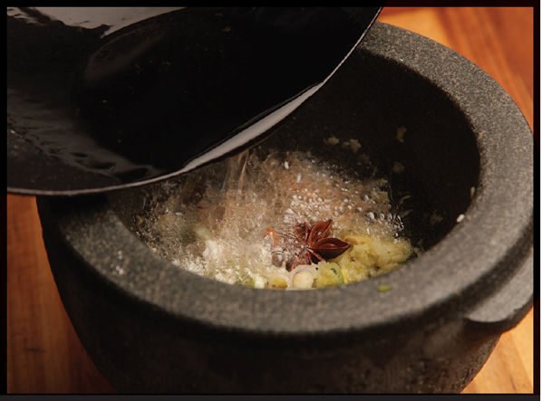
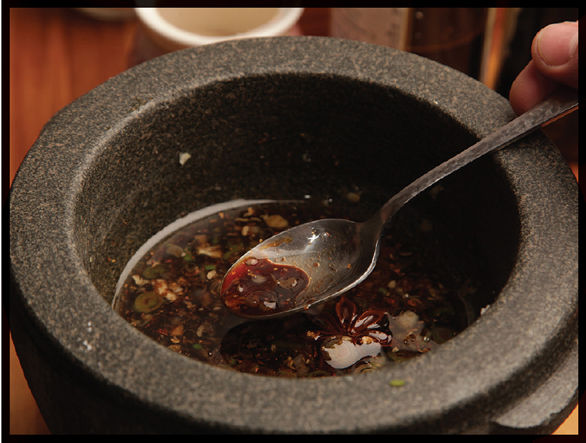

SOY AND FRAGRANT OIL DIPPING SAUCE
|
Yield Makes ½ cup |
Active Time 5 minutes Total Time 5 minutes |
INGREDIENTS
1 medium garlic clove, roughly chopped
One ¼-inch segment fresh ginger, peeled
Kosher salt
1 scallion, thinly sliced
1 teaspoon (3 g) dried hot chile, such as Sichuan er jing tiao or Thai bird (optional)
¼ teaspoon (0.5 g) ground Sichuan peppercorns (optional)
1 star anise pod (optional)
2 tablespoons peanut, rice bran, or other neutral oil
3 tablespoons (45 ml) light soy sauce
2 tablespoons (15 ml) Chinkiang, black, or rice vinegar
1 tablespoon (15 ml) water
1 tablespoon (12 g) sugar
This light and fragrant sauce is an excellent dipping sauce for stir-fried or simply boiled or steamed shrimp, boiled or steamed crab or lobster, or steamed fish. It’s also great as a sauce for dumplings, poached chicken, or cold noodles. The chiles and warm spices are optional.
DIRECTIONS
1Combine the garlic, ginger, and a pinch of kosher salt in the bowl of a mortar and pestle and pound into a paste. Scrape the mixture into a small heatproof bowl. Add the scallions and optional chile, Sichuan peppercorns, and star anise to the bowl and stir with a fork or chopsticks to combine.
2Heat the oil in a wok or small skillet until smoking hot, then pour directly on top of the garlic/ginger/scallion mixture. Stir immediately with chopsticks or a fork. It should sizzle rapidly and release a very nice aroma. Stir in the soy sauce, vinegar, water, and sugar until dissolved. The flavored dipping sauce can be stored in a sealed container in the refrigerator for several weeks.

